药 食 同 源
参鸽堂
产品手册
百年药企九味古方
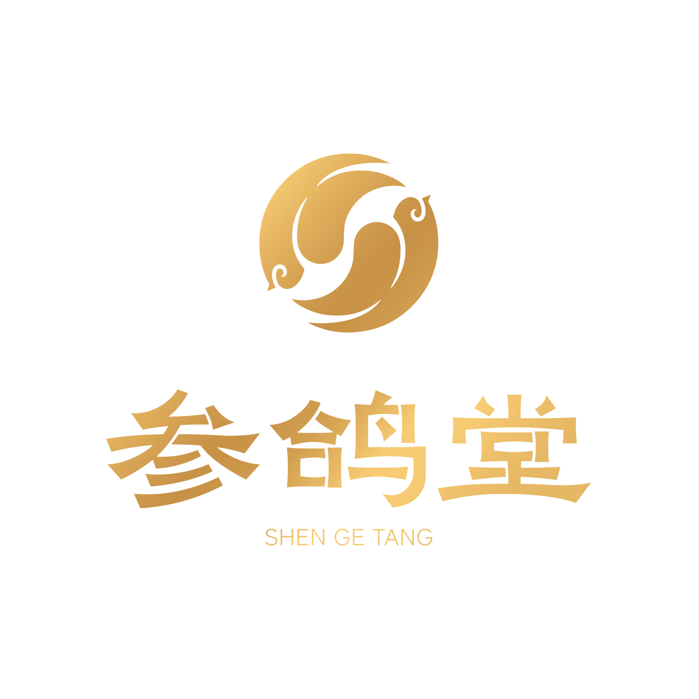
药 食 同 源
百年药企九味古方
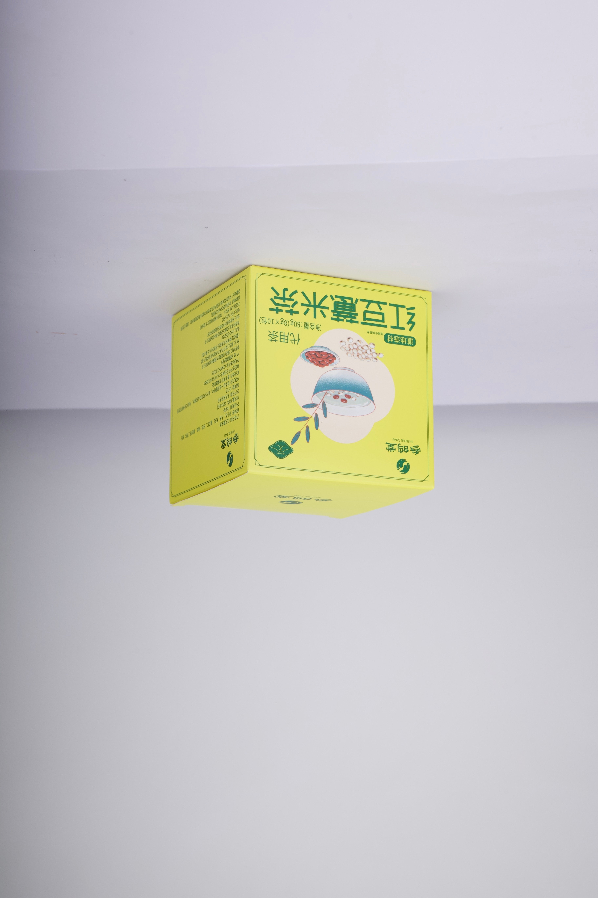
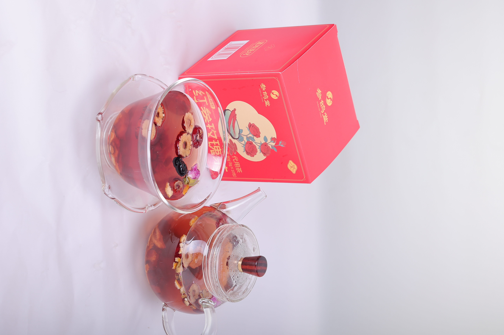
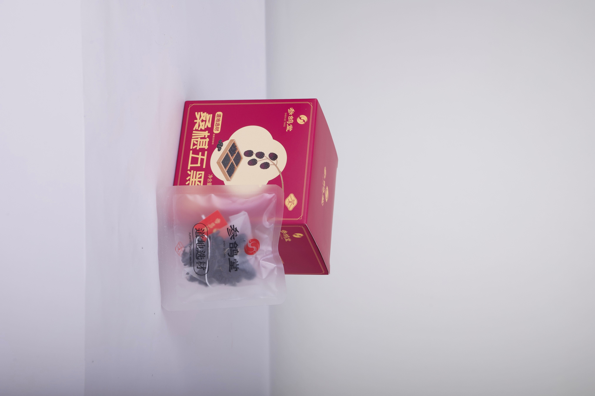
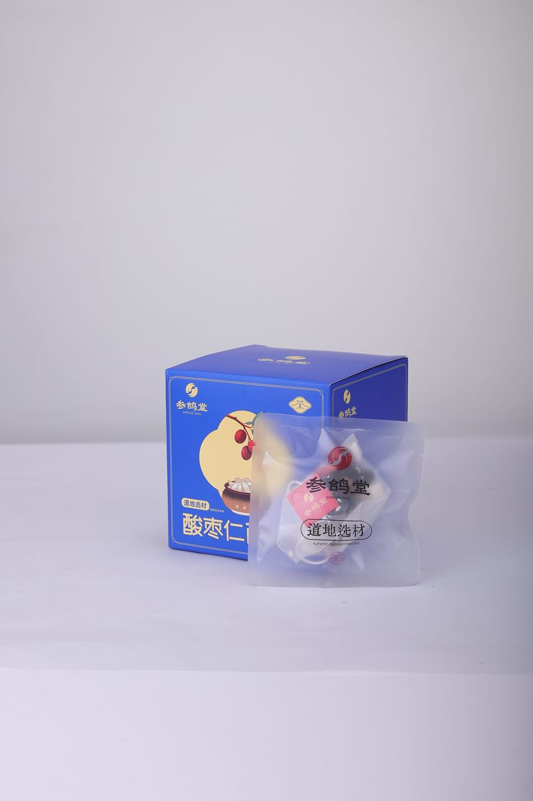
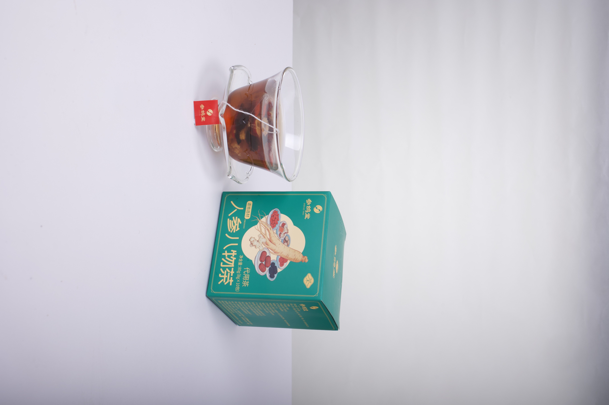
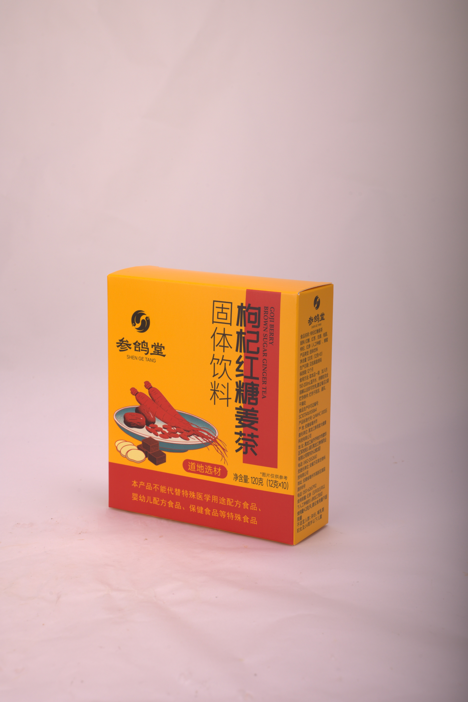
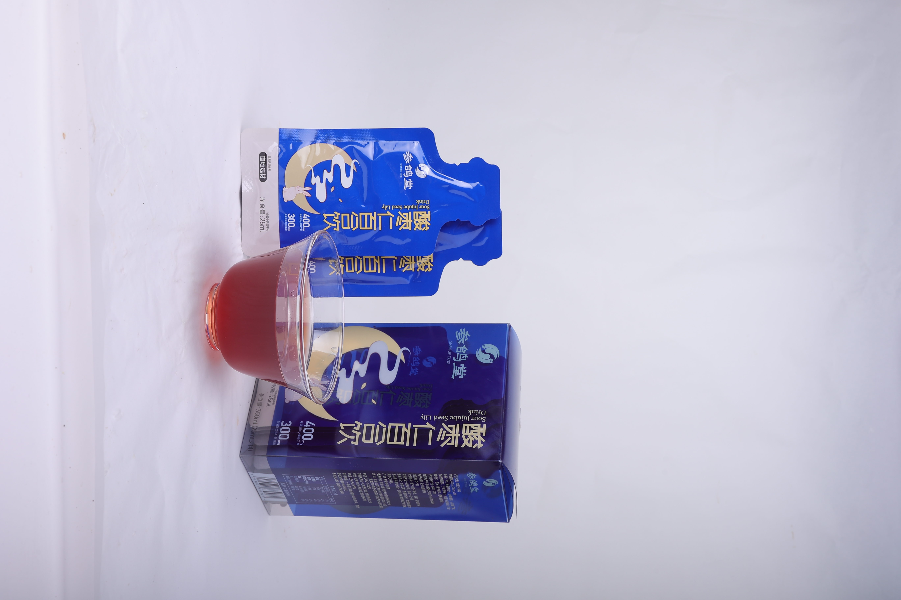
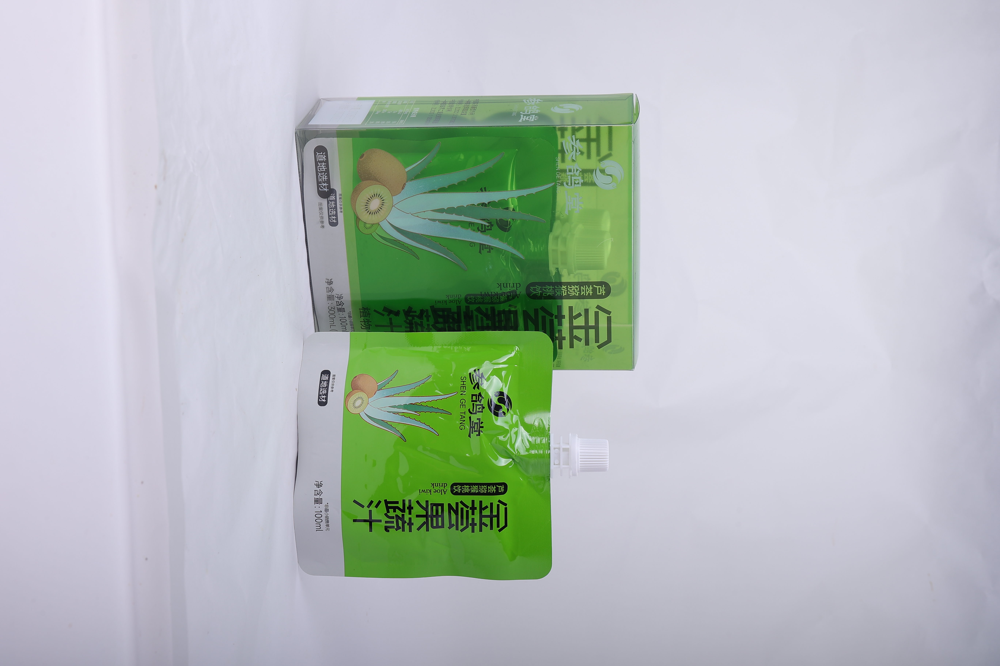
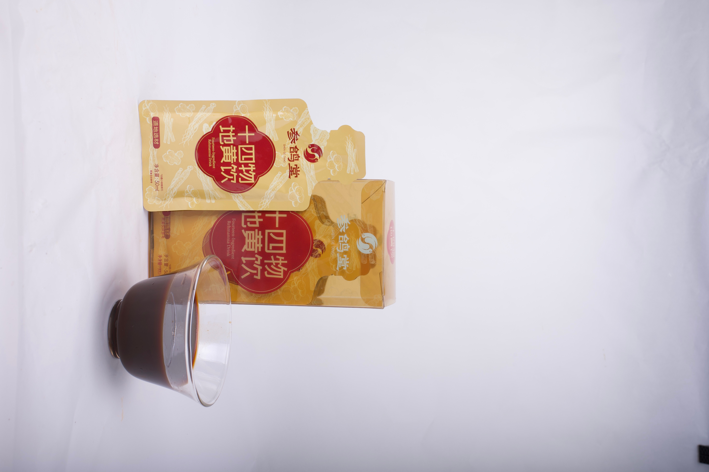
品 牌 介 绍
参鸽堂（黑龙江参鸽堂大健康科技有限公司），参鸽药业（始创于1910年）控股子公司，承袭百年制药经验，扎根东北道地药材核心产区，从源头把控品质。
品牌遵循"以食为疗、寓医于食"的中医传统理念，以经典古方为根基，精选药食同源原料，运用现代工艺精制而成。旗下产品覆盖茶包、颗粒与直饮三大品类，从祛湿健脾、补气养血到安神助眠，辨证搭配，一味一境。
茶包系列独立小袋，热水冲泡即可；颗粒系列一冲即溶；直饮系列开袋即饮，便捷随身。让日常养生轻松融入生活节奏。
参 鸽 堂
独立小袋，即拆即泡
热水冲泡3-5分钟，随时随地的养生便利
茶包系列 · 祛湿健脾
每天来一杯，身体轻松不沉重
九味道地药食同源原料科学配伍，专攻湿气困脾所致浮肿虚胖、倦怠乏力、食欲不振、大便黏腻。茶包独立小袋，即拆即泡，随时随地轻松祛湿。
全国零售价：49元
功 能 主 治
中医认为“脾主运化水湿”。饮食不节、久坐少动、贪凉饮冷，皆可损伤脾胃，水液代谢失常，湿气内生。轻则浮肿倦怠，重则痰湿积聚引发肥胖。红豆薏米茶以健脾祛湿为核心，从根源调理：
晨起眼睑浮肿、下肢沉重，体重不重但看起来虚胖
全身困重、懒得动，睡够8小时还是觉得累
口中黏腻无味、饭后腹胀不消化
大便不成形、粘马桶、冲不干净
舌体胖大、边缘有齿痕，舌苔白厚或发黄
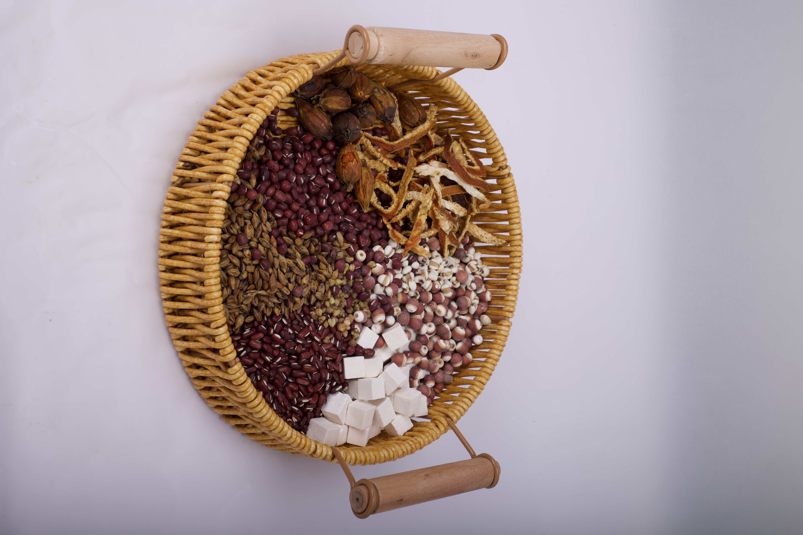
原 料 配 伍
作 用 机 理
薏苡仁、茯苓、大麦、橘皮四味协同，恢复脾胃运化水湿的功能。脾为生湿之源，健脾即断湿气来路。
赤小豆力专利水消肿，栀子清热利湿，将已生成的湿气通过小便排出体外，消肿减重。
芡实补脾固精、益肾止泻，防止利水太过而伤正气，重建水液代谢平衡，湿气不再反复。
九味合用，遵循“祛湿不伤正，利水不耗气”的原则。赤小豆利水消肿、薏苡仁健脾渗湿；茯苓、大麦健脾和胃；芡实、红豆、栀子、黄苦荞固涩养血、清热消积；橘皮理气健脾。标本兼治，湿去而脾健。
用 法 与 禁 忌
湿气重、浮肿虚胖、久坐少动、饮食油腻、大便黏腻不成形者。尤其适合长期在空调房工作、缺乏运动的上班族，以及夏季湿热季节需要祛湿调理的人群。
取一袋置入杯中，倒入约300mL沸水，冲泡3-5分钟即可饮用。一次一袋，一日1-2次，建议饭后半小时饮用。可反复冲泡至味淡。
祛湿期间建议配合清淡饮食，减少油腻、生冷、甜食摄入。适当运动出汗有助于加速湿气排出。可与薏米粥、冬瓜汤等食疗搭配，效果更佳。
婴幼儿、孕妇及哺乳期妇女不宜食用。本品含麸质谷物及其制品，过敏者慎用。本品为代用茶，不可替代药品。如正在服用其他药物，请咨询医师。
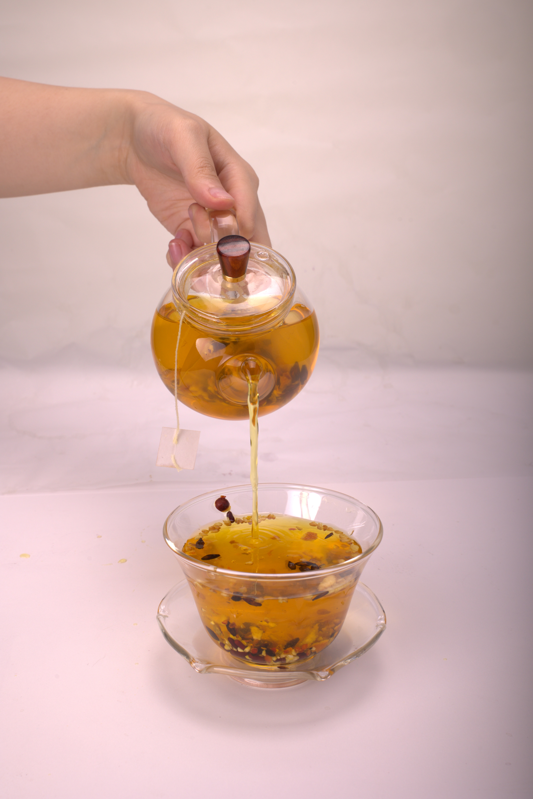
茶包系列 · 补气养血
气血双补，面若桃花好气色
九味道地药食同源原料科学配伍，以红参、桂圆红枣为核心，专攻气血不足所致面色萎黄、疲倦乏力、手脚冰凉、月经不调。茶包独立小袋，即拆即泡，温润滋养每一天。
全国零售价：49元
功 能 主 治
中医认为“气为血之帅，血为气之母”。气血互生互用，一荣俱荣、一损俱损。饮食不调、思虑过度、熬夜耗神，皆可暗耗气血。轻则面色无华、神疲乏力，重则月经紊乱、早衰之象。红参玫瑰茶以益气养血、疏肝解郁为核心，从根源调理：
脸色暗沉无光泽、唇色淡白，化妆品遮不住底子里的疲惫
说话有气无力、稍微活动就心慌气短，总想躺着
一年四季手脚不温，冬天尤甚，暖水袋不离手
经期推迟、量少色淡，或经前乳房胀痛、情绪烦躁
入睡困难、睡眠浅易惊醒，晨起仍觉疲惫
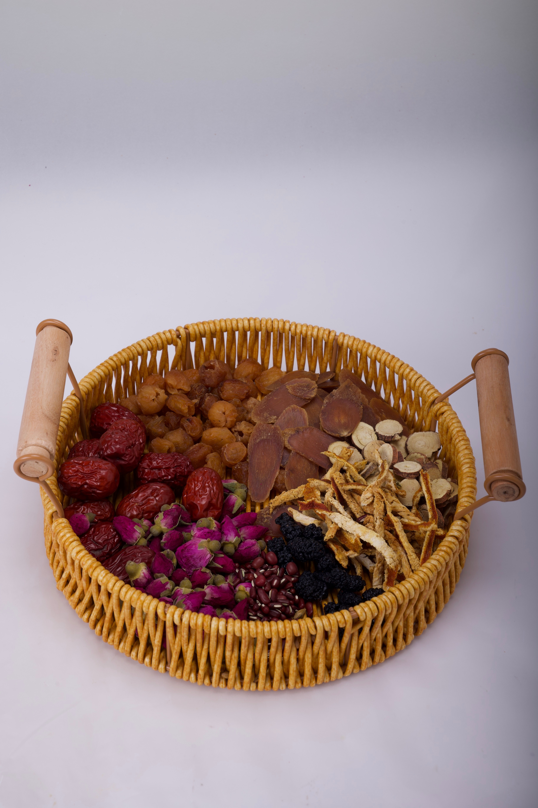
原 料 配 伍
作 用 机 理
红参大补元气、黄芪补气升阳，气足则血生有源。气能生血，补气即是补血之根。
桂圆、红枣、桑椹三味协同，养心血、益肝血，血足则面色红润、心神安宁。
玫瑰疏肝理气、甘草调和诸本草，气血通畅则月经调和、面若桃花。
九味合用，遵循“补而不燥，温而不腻”的原则。红参大补元气；桂圆、红枣、黄芪助益气养血；甘草、玫瑰、桑椹、赤小豆理气活血、滋阴利湿；橘皮理气健脾。气血双补，标本兼治。
用 法 与 禁 忌
气血不足、面色萎黄、手脚冰凉、月经量少色淡、产后体虚、长期熬夜耗神者。尤其适合工作压力大、经常加班、面色憔悴的职场女性。
取一袋置入杯中，倒入约300mL沸水，冲泡3-5分钟即可饮用。一次一袋，一日1-2次，建议上午饮用。可反复冲泡至味淡。
补气血期间建议配合规律作息，避免熬夜。可与红枣粥、当归炖鸡等食疗搭配。经期量多者建议经后再饮。
婴幼儿、孕妇及哺乳期妇女不宜食用。本品含红参，不宜与藜芦、五灵脂同用。本品为代用茶，不可替代药品。
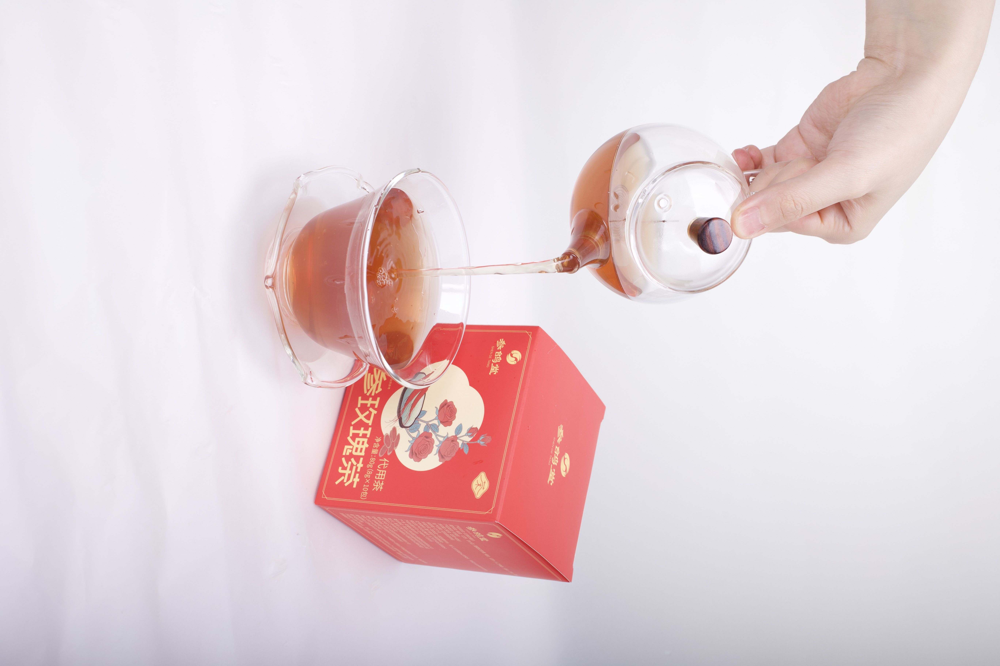
茶包系列 · 补肾养黑
以黑养黑，由内而外的乌黑润泽
六味道地黑色食材科学配伍，遵循中医“黑色入肾“理论，专攻肾精不足所致须发早白、脱发掉发、腰膝酸软、精力不济。茶包独立小袋，即拆即泡，以黑养黑，自然润泽。
全国零售价：49元
功 能 主 治
中医认为“肾藏精，其华在发”。肾精充足则头发乌黑有光泽、骨骼强健、精力充沛。熬夜、劳累、久病皆可耗伤肾精，发为血之余，精血同源。桑椹五黑茶以补肾益精、养血乌发为核心，从根源调理：
年纪不大却白发渐多，头发干枯无光泽、易断裂
梳头洗头时大把掉发，发际线后移、发量明显减少
久站久行后腰酸腿软，上下楼梯膝盖无力
总觉疲惫、注意力不集中，记忆力下降
入睡困难、多梦，白天头昏脑涨、反应迟钝
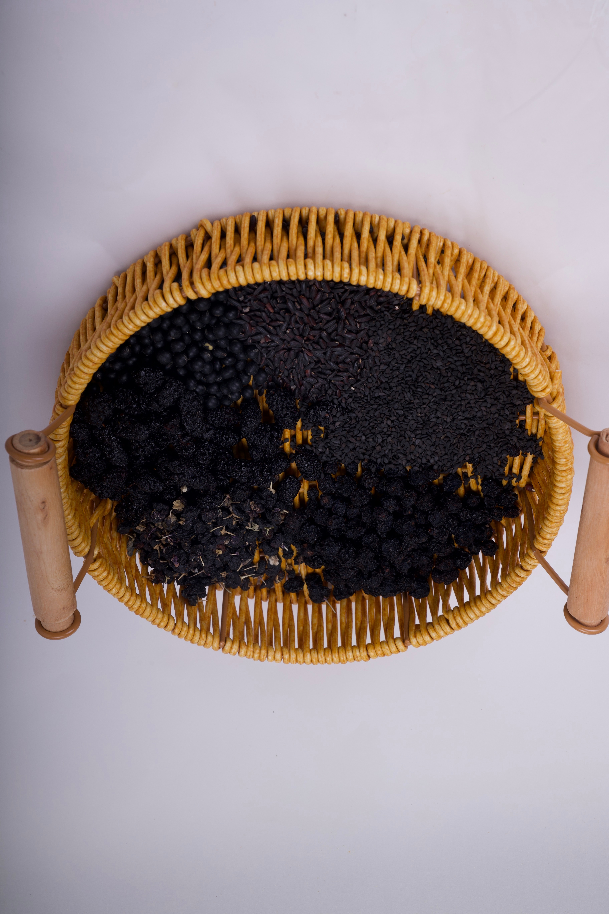
原 料 配 伍
作 用 机 理
桑椹、黑豆、黑米三味协同，补益肾精。肾藏精，精生血，精足则血有源。
黑芝麻富含维生素E与不饱和脂肪酸，配合桑椹滋养发根，血足则发得濡养。
黑果枸杞花青素、黑果腺肋花楸果原花青素，清除自由基，延缓毛囊老化。
六味合用，遵循“黑色入肾，以黑养黑”的中医理论。桑椹滋阴补血；黑芝麻、黑豆助益精血；黑米、黑果枸杞补肝肾；黑果腺肋花楸果富含原花青素。六黑合力，内外兼养。
用 法 与 禁 忌
须发早白、脱发掉发、发质干枯、腰膝酸软、精力不足者。尤其适合长期熬夜、工作压力大、用脑过度导致早生白发的人群。
取一袋置入杯中，倒入约300mL沸水，冲泡3-5分钟即可饮用。一次一袋，一日1-2次，建议下午或晚间饮用。可反复冲泡至味淡。
养发期间建议配合规律作息、减少熬夜。可与黑芝麻糊、核桃等食疗搭配。外用配合头皮按摩效果更佳。
婴幼儿、孕妇及哺乳期妇女不宜食用。本品为代用茶，不可替代药品。大便溏泄者慎用（含黑芝麻润肠）。
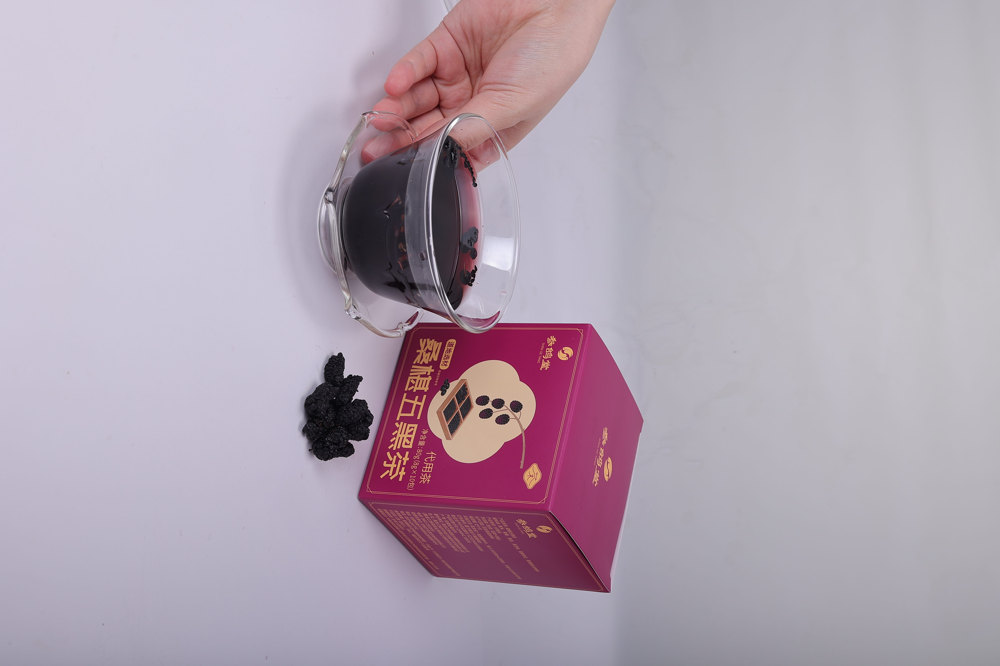
茶包系列 · 安神助眠
睡前一盏，还你一夜深睡眠
八味道地药食同源原料科学配伍，以酸枣仁、百合为核心，专攻心神不宁所致入睡困难、浅睡多梦、易醒早醒。茶包独立小袋，即拆即泡，睡前一杯，安神入梦。
全国零售价：49元
功 能 主 治
中医认为“心藏神，肝藏魂”。心肝血虚则神魂不安，虚火扰心则难以入眠。思虑过度、压力山大、更年期前后，皆可暗耗心肝之血。酸枣仁百合茶以养心安神、滋阴清热为核心，从根源调理：
躺下脑子停不下来，翻来覆去一两个小时才能睡着
一晚上做梦不断，稍有动静就醒，睡不踏实
凌晨三四点醒来再也睡不着，睁眼到天亮
白天心慌心悸、坐立不安，情绪波动大、易怒
睡眠不足导致白天昏沉、注意力涣散、记忆力下降
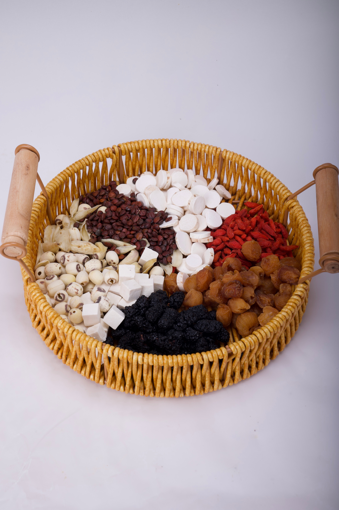
原 料 配 伍
作 用 机 理
酸枣仁直入心肝二经，养心血、益肝血。心藏神、肝藏魂，心血肝血充足则神魂自安。
百合清心润肺、桑椹滋阴养血，阴液充足则虚火自降，心神不被热扰。
莲子、茯苓健脾宁心、交通心肾，心火下降、肾水上济，水火既济则安眠。
八味合用，遵循“养心安神，滋阴清热”的原则。酸枣仁养心益肝；百合、莲子、茯苓清心安神、宁心健脾；桂圆、桑椹、枸杞补血滋阴；山药培补脾肾。心肝脾肾同调，治失眠求其本。
用 法 与 禁 忌
入睡困难、浅睡多梦、易醒早醒、心烦焦虑者。尤其适合工作压力大、思虑过度、更年期前后睡眠质量下降的人群。
取一袋置入杯中，倒入约300mL沸水，冲泡3-5分钟即可饮用。一次一袋，一日1次，建议睡前1小时饮用。可反复冲泡至味淡。
助眠期间建议配合规律作息，睡前避免刷手机、喝浓茶咖啡。可与温牛奶、泡脚等助眠习惯搭配。
婴幼儿、孕妇及哺乳期妇女不宜食用。本品为代用茶，不可替代药品。如正在服用镇静类药物，请咨询医师。
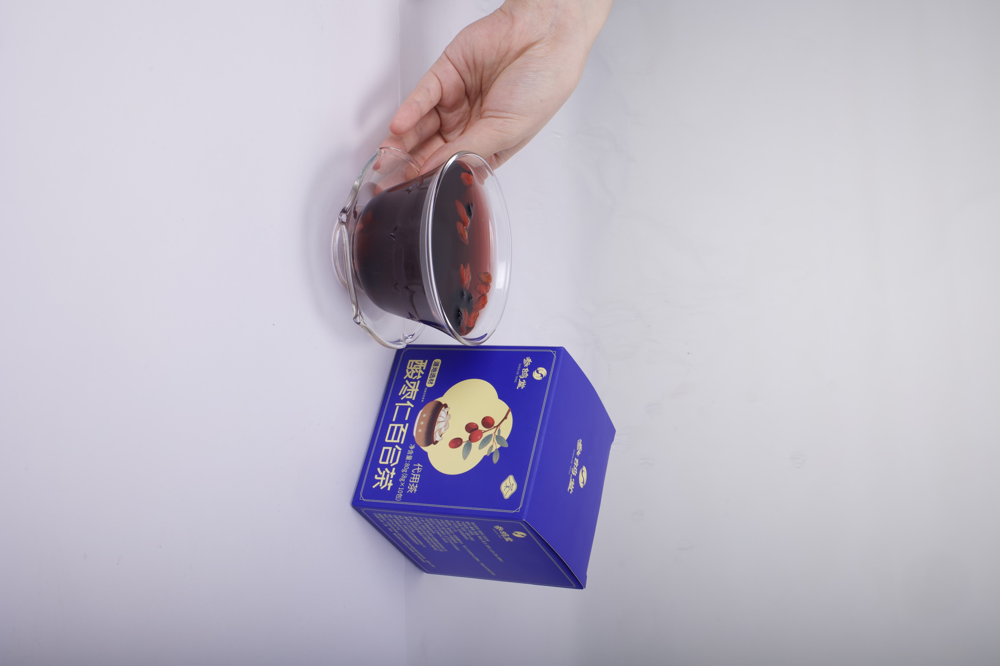
茶包系列 · 补元养精
八味补元，重燃生命活力
八味道地药食同源原料科学配伍，以人参、黄精枸杞为核心，专攻元气亏虚所致精力不济、易疲劳、免疫力低下、腰膝酸软。茶包独立小袋，即拆即泡，补元气、强精力。
全国零售价：49元
功 能 主 治
中医认为“元气者，生之根本也”。元气禀受于先天，赖后天水谷精微充养。过度劳累、久病耗损、房事不节，皆可暗耗元气。元气亏则百病生。人参八物茶以大补元气、益精填髓为核心，从根源调理：
容易疲劳、稍微活动就气喘，下班回家只想躺着
容易感冒、换季必中招，恢复慢、反复发作
久坐久站后腰酸背痛，双腿无力、爬楼喘
性欲下降、力不从心，夫妻生活质量明显降低
注意力不集中、忘性大，工作效率明显下降
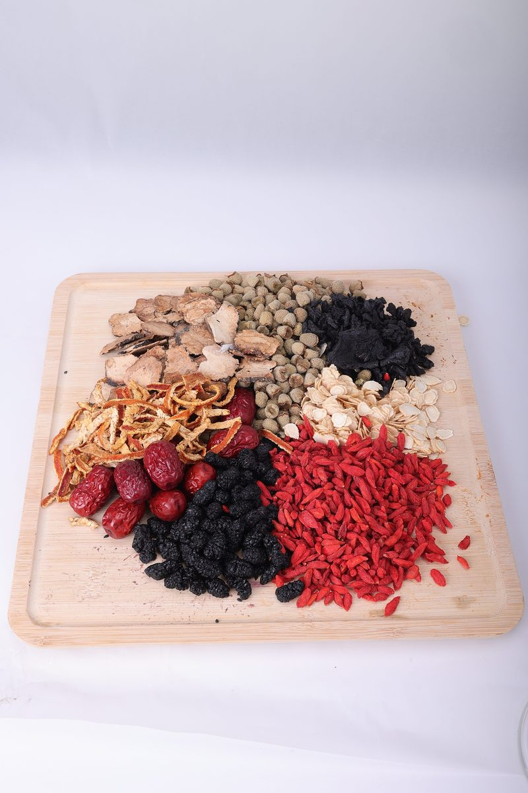
原 料 配 伍
作 用 机 理
人参直补元气，为补气诸本草之最。元气足则五脏六腑功能旺盛，精力充沛。
黄精、枸杞、覆盆子、玛咖四味协同，补肾填精。肾藏精，精足则生命力旺盛。
大枣、橘皮健脾和胃、理气化滞。脾胃为气血生化之源，脾胃健则后天养先天。
八味合用，遵循“补而不燥，温而不烈”的原则。人参大补元气；黄精、枸杞、大枣助益气养阴；桑椹、覆盆子、玛咖滋阴固精；橘皮理气健脾。先天后天同补，元气源源不绝。
用 法 与 禁 忌
元气亏虚、精力不济、易疲劳、免疫力低下、性功能减退者。尤其适合长期加班、应酬多、体力透支的职场男性及产后体虚人群。
取一袋置入杯中，倒入约300mL沸水，冲泡3-5分钟即可饮用。一次一袋，一日1-2次，建议上午饮用。可反复冲泡至味淡。
补元气期间建议配合充足睡眠、适当运动。可与山药粥、鸡汤等食疗搭配。不宜与浓茶、咖啡同时饮用。
婴幼儿、孕妇及哺乳期妇女不宜食用。本品含人参，不宜与藜芦、五灵脂同用。感冒发热期间暂停饮用。本品为代用茶，不可替代药品。
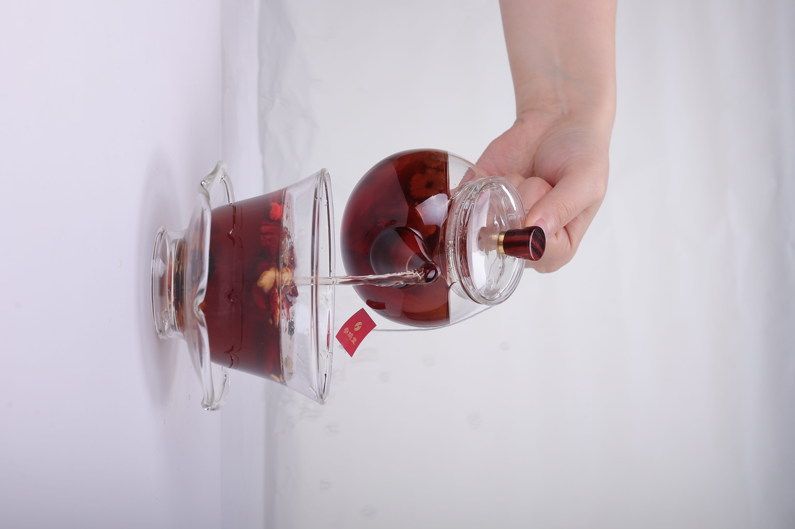
参 鸽 堂
古法红糖为基，复配名贵本草
一冲即溶，暖身暖宫暖心胃
颗粒系列 · 暖宫驱寒
一杯暖全身，告别手脚冰凉
七味道地食材科学配伍，以生姜红糖、红枣桂圆为核心，专攻阳虚宫寒所致手脚冰凉、痛经畏寒、胃寒腹痛。一冲即溶，暖心暖胃暖全身。
全国零售价：59元
功 能 主 治
中医认为“阳虚则外寒”。阳气不足则温煦无力，寒气内生。贪凉饮冷、穿衣单薄、久坐不动，皆可损伤阳气。女性经期受寒更易致宫寒痛经。枸杞红糖姜茶以温经散寒、暖宫养血为核心，从根源调理：
一年四季手脚不暖，冬天尤甚，一晚上被窝都捂不热
经期小腹冷痛，热敷能缓解，经血有血块、颜色暗
吃凉的就胃痛腹胀，喝热水才舒服
脸色白而无华，唇色淡，容易头晕
怕冷怕风，换季必感冒，抵抗力差
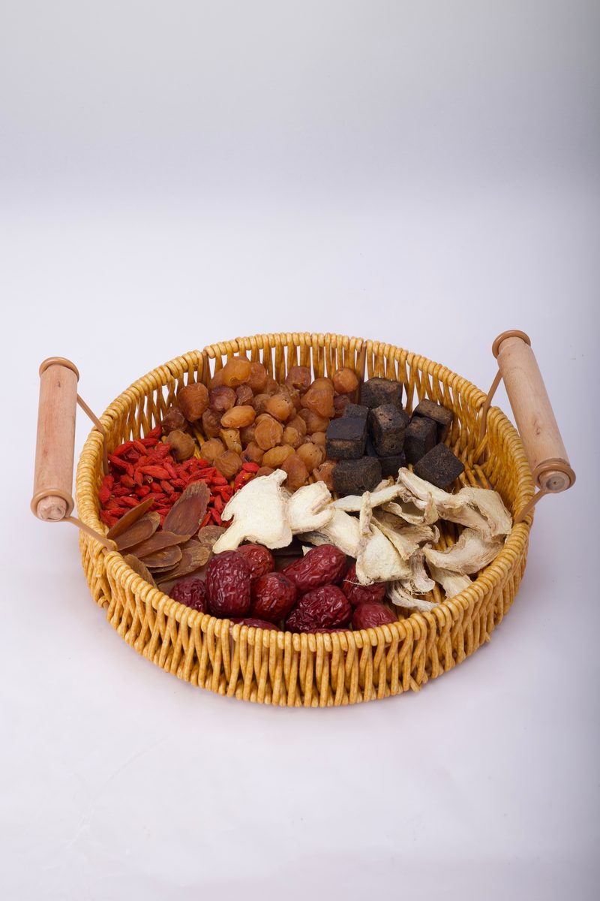
原 料 配 伍
作 用 机 理
生姜辛温发散，红糖温中补虚，二味直达脾胃，驱散体内寒邪。
红枣、桂圆补血养心，红参大补元气，气血充足则胞宫得暖。
枸杞滋补肝肾、蜂蜜调和诸本草，温而不燥，标本兼治。
七味合用，遵循“温而不燥，补而不腻”的原则。生姜、红糖温经散寒；红枣、桂圆养血安神；枸杞、红参益气滋阴；蜂蜜调和诸本草。寒散血行，周身温暖。
用 法 与 禁 忌
手脚冰凉、痛经宫寒、胃寒腹痛、怕冷畏寒者。尤其适合体寒女性经期前后饮用，以及冬季手足不温、容易感冒的人群。
取一袋倒入杯中，加入约200mL热水，搅拌均匀即可饮用。一次一袋，一日1-2次。经期前三天开始饮用效果更佳，经期量多者经期暂停。
暖宫驱寒期间建议少吃生冷、注意腹部保暖。可与艾灸、泡脚等外治法搭配。早晨空腹一杯效果最好。
婴幼儿、孕妇及哺乳期妇女不宜食用。经期量多者慎用。阴虚火旺、口干舌燥者慎用。本品含红糖，糖尿病患者慎用。本品为代用茶，不可替代药品。
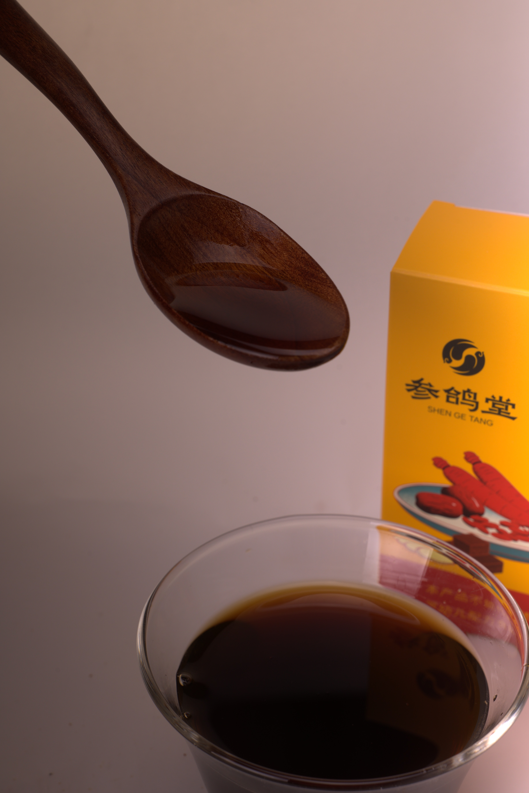
参 鸽 堂
开袋即饮，免冲免泡
现代工艺融合本草精华，便捷养生新方式
直饮系列 · 安神助眠
开袋即饮，安然入梦
酸枣仁、百合、莲子等七味道地药食同源本草科学配伍，专攻入睡困难、浅睡多梦、睡眠质量差。独立便携包装，开袋即饮，随时随地安睡。
全国零售价：159元
功 能 主 治
中医认为“心藏神，肝藏魂”，心神不安则入睡困难，肝魂不宁则多梦易醒。思虑过度、压力焦虑、作息紊乱，皆可暗耗心肝之血，血不养神则失眠。酸枣仁百合饮以养心安神、清热除烦为核心，从根源调理：
躺下脑子停不下来，翻来覆去一两个小时才能入睡
整晚做梦不断，稍有动静就醒，深度睡眠不足
凌晨两三点醒了再也睡不着，睁眼到天亮
白天头昏脑涨、注意力涣散、工作效率低
因长期睡不好导致心烦易怒、心慌不安
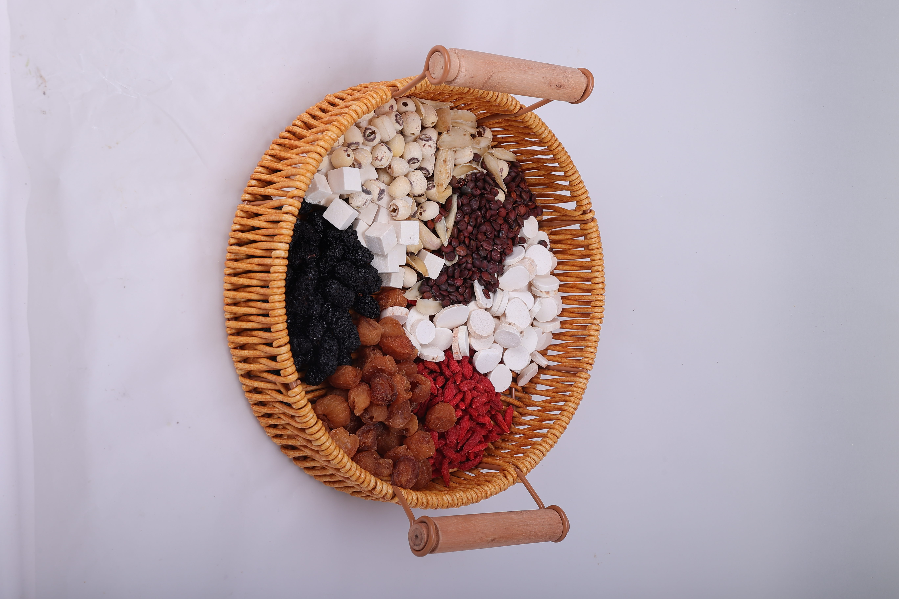
原 料 配 伍
作 用 机 理
酸枣仁养心益肝、红枣养血安神、莲子交通心肾，血足则心有所养，神自归位。
百合清心安神、茯苓宁心利湿，清心经虚热、除痰湿扰心，心神得宁。
玫瑰花疏肝理气、桑椹补肝血滋阴，肝气条达、肝血充足，魂得所藏。
七味本草，遵循“养而不燥，清而不寒”的原则。酸枣仁养心安神为核心；百合、莲子助清心安神；茯苓、桑椹、红枣、玫瑰花健脾养血、疏肝解郁。心神得养、肝魂得藏，自然安睡。
用 法 与 禁 忌
入睡困难、浅睡多梦、易醒早醒、因压力焦虑导致睡眠质量下降者。尤其适合工作压力大、经常出差、作息不规律的职场人群。
开袋即饮，一次1袋，每日1次。建议睡前30分钟饮用。冷藏后口感更佳，也可常温饮用。
助眠期间建议配合规律作息，睡前1小时远离手机蓝光。可与泡脚、冥想等放松方式搭配。
婴幼儿、孕妇及哺乳期妇女不宜食用。本品为植物饮料，不可替代药品。如正在服用镇静安眠类药物，请咨询医师。
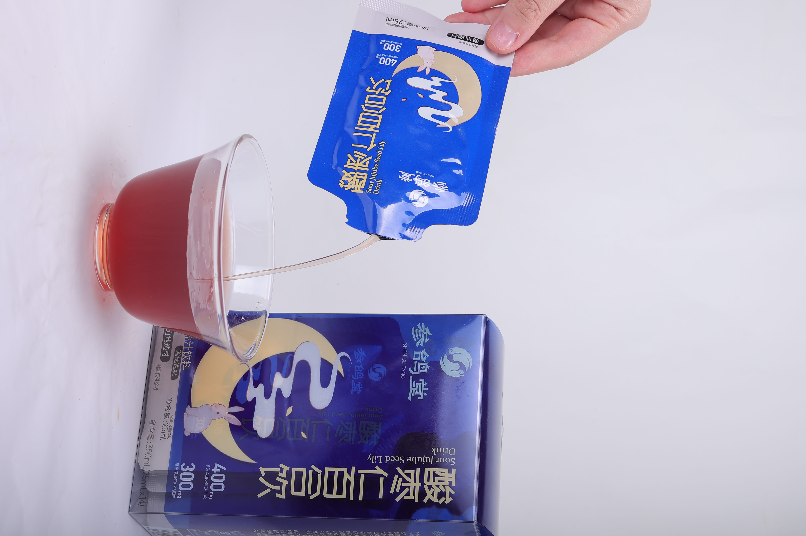
直饮系列 · 润肠通便
通畅每一天，轻盈无负担
精选猕猴桃、库拉索芦荟凝胶、火麻仁、黄芪、荷叶等药食同源原料，温和润肠、改善便秘。独立便携包装，开袋即饮，温和通便不腹痛。
全国零售价：59元
功 能 主 治
中医认为“大肠者，传导之官，变化出焉”。饮食精细少纤维、饮水不足、久坐少动、阴虚津亏，皆可致肠道传导失常。金荟果蔬汁以润肠通便、清热导滞为核心，温和调理：
大便干结如羊屎、排便费力、有排不尽的感觉
几天不排便、腹部胀满不适、食欲下降
肠道毒素滞留导致口气不清新、面部爱出油长痘
肠道毒素累积，面色暗黄无光、色斑加重
排便用力加重痔疮，形成恶性循环
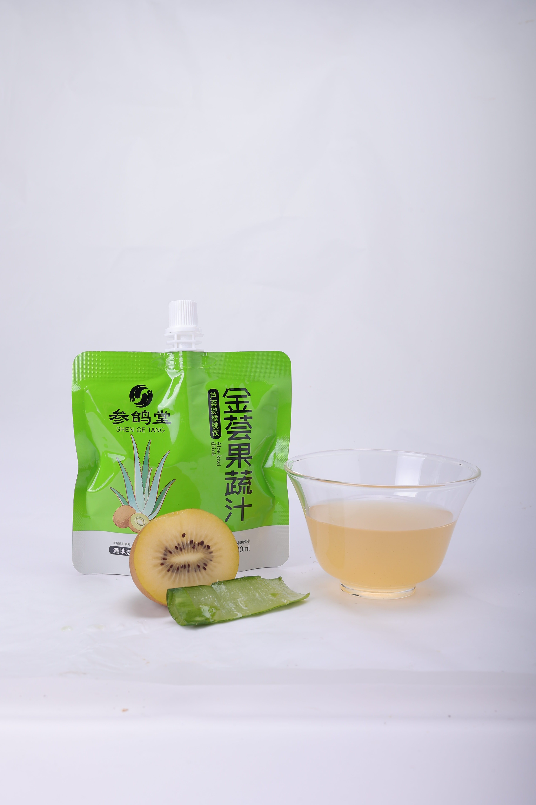
原 料 配 伍
作 用 机 理
火麻仁富含天然油脂润滑肠道、软化粪便，芦荟凝胶滋润肠壁，解决干结问题。
芦荟温和刺激肠道蠕动、猕猴桃膳食纤维增加粪便体积，推动排便反射。
黄芪补气升阳、荷叶升清降浊，增强肠道自主蠕动能力，不依赖刺激。
五味本草，遵循“润而不泻，通而不伤”的原则。芦荟润肠导滞、火麻仁润肠通便、猕猴桃清热生津、黄芪补气助运、荷叶升清降浊。温和通便，不含番泻叶等刺激性泻药成分。
用 法 与 禁 忌
便秘、排便困难、大便干结、腹胀不适者。尤其适合久坐办公室、饮食精细少纤维、饮水不足的上班族和产后便秘人群。
开袋即饮，一次1袋，每日1次。建议早晨空腹或睡前饮用。首次使用建议从半袋开始，根据排便情况调整用量。
通便期间建议多喝水（每日1500mL以上）、增加蔬菜摄入、适当运动。不建议长期依赖，排便恢复正常后可减量或隔日使用。
婴幼儿、孕妇及哺乳期妇女不宜食用。急腹症、肠梗阻患者禁用。腹泻期间暂停使用。本品为植物饮料，不可替代药品。
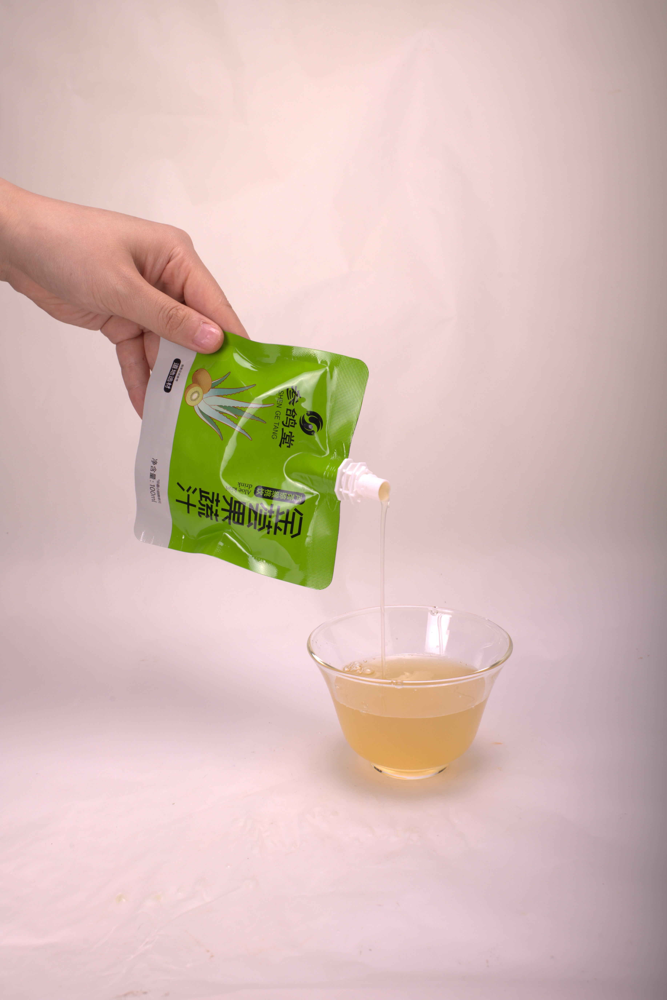
直饮系列 · 补肾滋阴
十四味滋补，由内而外的年轻态
精选十四味道地药食同源本草，以熟地黄、枸杞为核心，融合铁皮石斛、蛹虫草、党参、黄芪等，专攻肾阴亏虚所致腰膝酸软、精力不济、须发早白。独立便携包装，开袋即饮。
全国零售价：99元
功 能 主 治
中医认为“肾为先天之本”，主藏精、主骨生髓。肾阴为一身阴液之根本。熬夜、劳累、年岁增长，皆可暗耗肾阴。肾阴亏则腰膝酸软、须发早白、五心烦热。十四物地黄饮以滋阴补肾、填精益髓为核心，十四味本草从根源调理：
久坐久站腰酸背痛、双腿无力、上下楼吃力
不到年纪就白头发增多，头发干枯易脱
容易疲劳、精神不振、干什么都提不起劲
入睡困难、记忆力明显下降、注意力不集中
手心脚心发热、夜间盗汗、口干咽燥
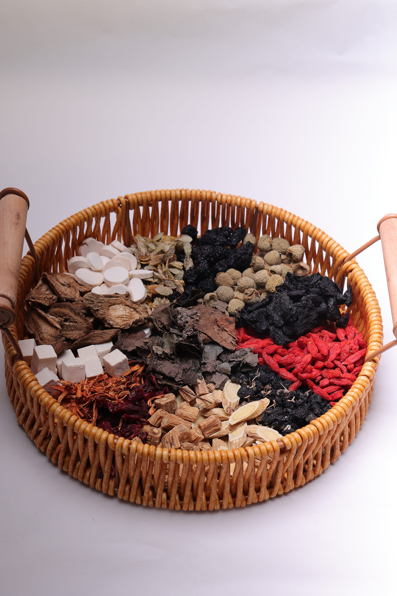
原 料 配 伍
作 用 机 理
熟地黄、铁皮石斛、桑椹协同，大补肾阴。阴液充足则虚火自降，五心烦热得解。
山茱萸、枸杞、黑果枸杞、覆盆子补肝肾、益精血。精足则髓满，腰膝强健、须发乌润。
黄芪、党参、山药、茯苓健脾补气，后天养先天。气足则精能化、血能生，阴阳平衡。
十四味本草，遵循“滋阴不寒凉，补而不滋腻”的原则。熟地黄、枸杞滋阴为核心；山茱萸、石斛、桑椹、黑枸杞助益肝肾；黄芪、党参等健脾补气；蛹虫草肺肾同调。集补肾名方六味地黄丸之意而更全面。
用 法 与 禁 忌
肾阴亏虚、腰膝酸软、须发早白、精力不济、失眠健忘、五心烦热者。尤其适合长期熬夜、用脑过度、年过四十精力下降的人群。
开袋即饮，一次1袋，每日1次。建议早晨或上午饮用。冷藏后口感更佳，也可常温饮用。
补肾期间建议配合规律作息、节制房事。可与黑芝麻、核桃、山药粥等食疗搭配。长期坚持效果更佳，建议连续饮用2-4周为一个调理周期。
婴幼儿、孕妇及哺乳期妇女不宜食用。感冒发热期间暂停饮用。脾胃虚寒、大便溏泄者慎用。本品为植物饮料，不可替代药品。
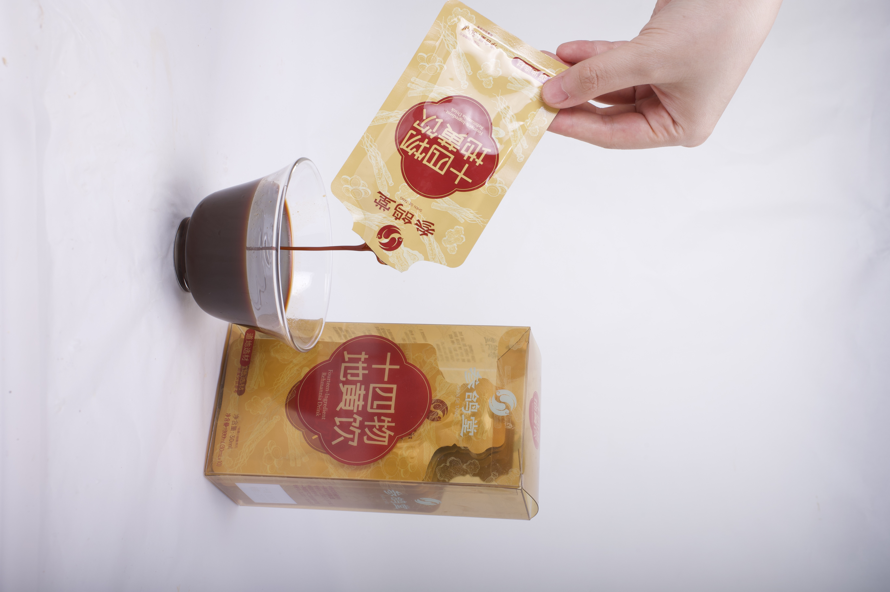
药 食 同 源
九款药食同源产品，辨证搭配，一味一境
为每一位顾客找到适合的养生方案
感 谢 观 看
扫码添加企业微信
了解更多产品信息与养生方案
扫一扫 添加企业微信